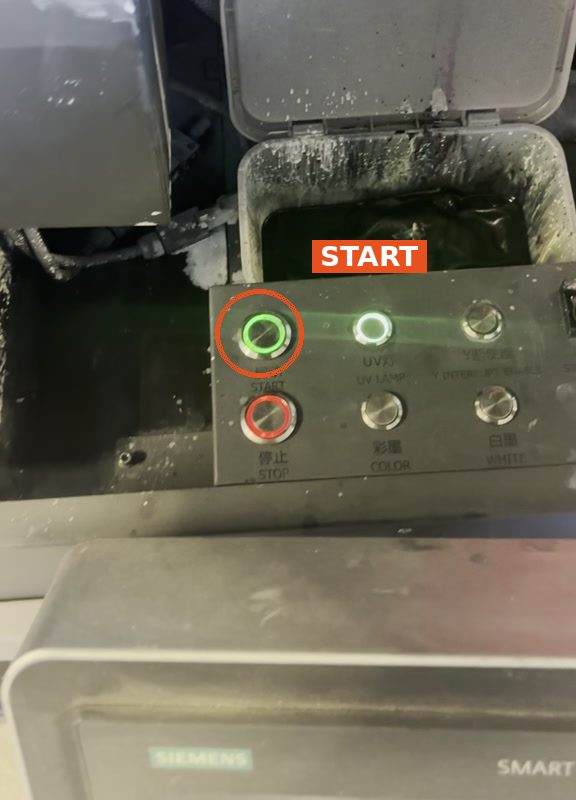
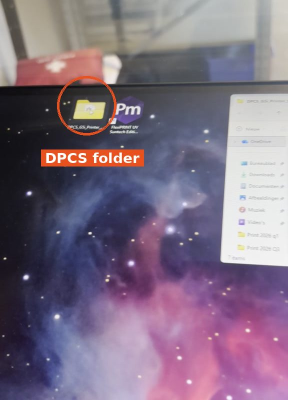
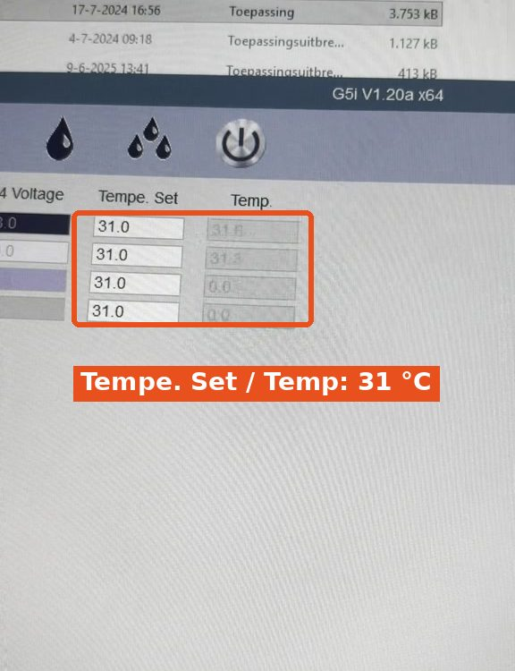
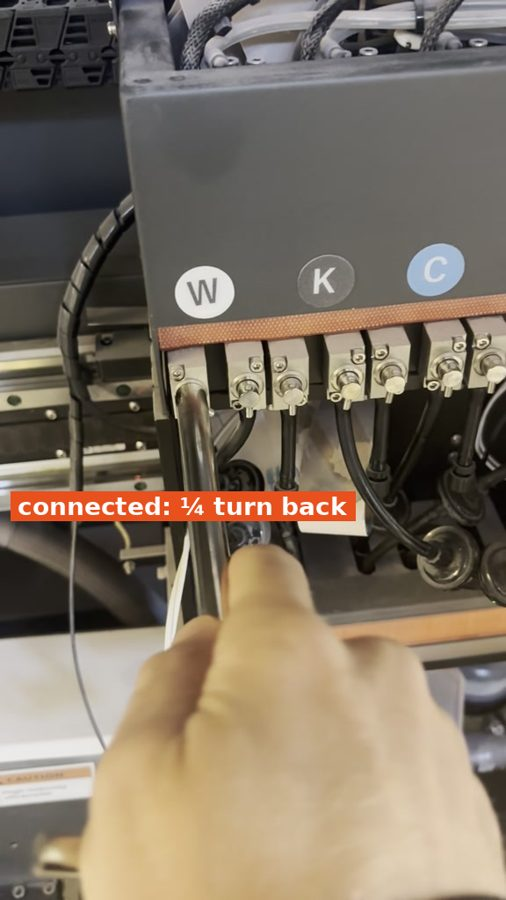

1
Switch on the machine
- Press START on the machine.
- The green light comes on.

How to switch on the mug printer (Mug 1) and get it ready to print. It works slightly differently from the bottle printer.
You need: non-dust cloth (lint-free) · PC code: 1997










✓ Ready to print.